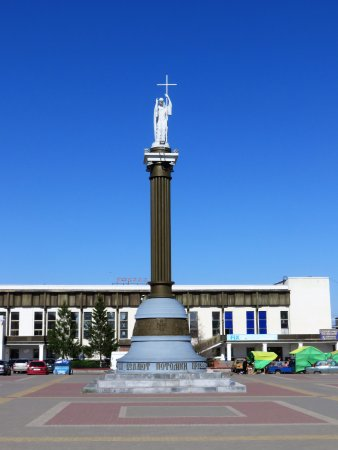
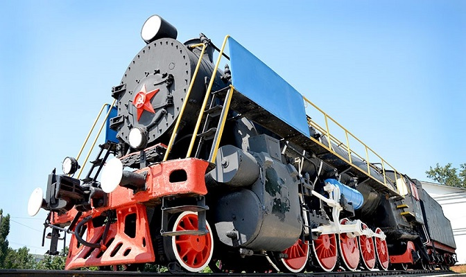
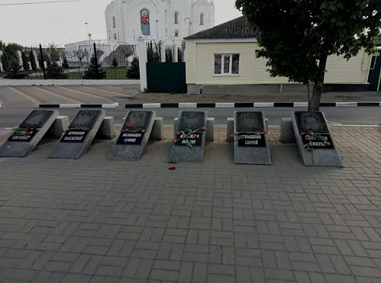
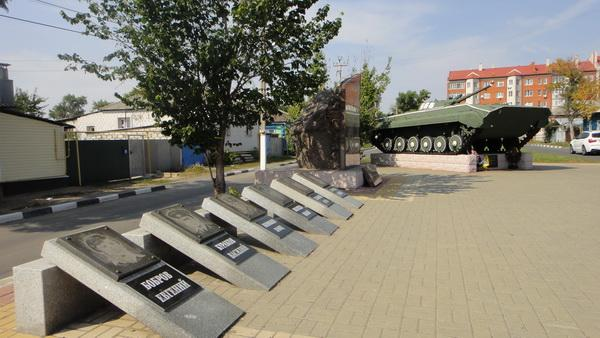
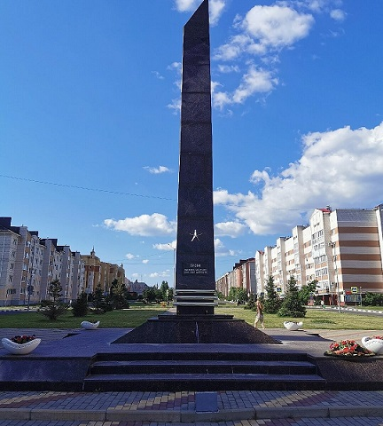
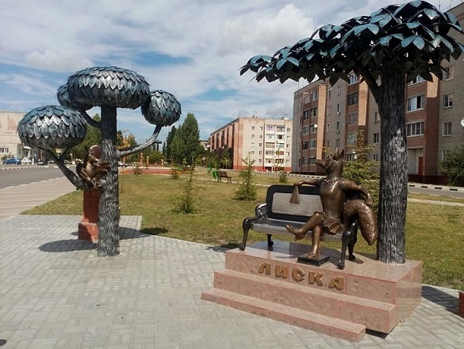
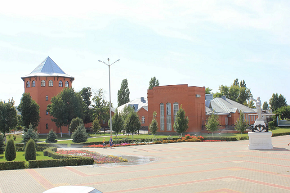
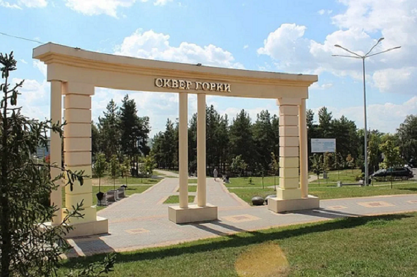
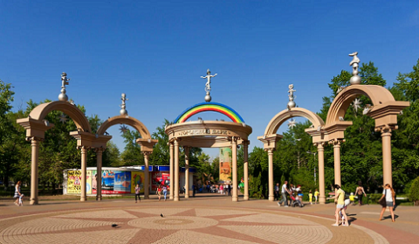
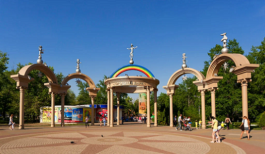

ЛИСКИ
Город Лиски находится в Воронежской области России. Он расположен на юго-востоке области, примерно в 120 километрах от Воронежа. Лиски являются административным центром Лискинского района.
Численность населения города Лиски Воронежской области по данным на 1 октября 2024 года, составляет 53 794 человека.
Достопримечательности города
Содержание
- Памятник Ангел-хранитель
- Собор Владимирской иконы Божией Матери
- Памятник паровозу ФД-20-1945
- Памятник воинам-авганцам
- Стела Лиски - населенный пункт воинской доблести
- Мемориальный Комплекс Аллея Славы
- Скульптура Ворона и Лиса
- Краеведческий музей
- Сквер "Горки"
- Городской парк культуры и отдыха
Памятник Ангел-хранитель
Памятник "Ангел-хранитель" в городе Лиски был установлен в конце 1990-х.
Он расположен в центре города и стал символом защиты и благополучия для жителей.
Памятник олицетворяет надежду и духовную поддержку.
Ангел-хранитель стал популярным местом для фотографий и встреч, а также местом, где жители могут обратиться с молитвой или просьбой о помощи.
Памятник подчеркивает культурное и духовное наследие города, а также его стремление к сохранению традиций и ценностей.
Собор Владимирской иконы Божией Матери
Собор Владимирской иконы Божьей Матери в городе Лиски, является важным религиозным и культурным объектом.
Он был построен в период с 2004 по 2009 год, и стал центром православной жизни в городе.
При храме имеется трапезная, действует библиотека, воскресная школа и православная школа для взрослых
Собор активно используется для богослужений и является главным местом паломничества для верующих.
Памятник паровозу ФД-20-1945
Памятник паровозу ФД-20-1945 в городе Лиски, был установлен в 1999 году и стал символом железнодорожной истории региона.
Монумент посвящён труду железнодорожников, работавших на станции Лиски с 1871 года.
Он олицетворяет труд железнодорожников и важность железнодорожного транспорта для развития города и региона.
Памятник стал популярным местом для фотографий и встреч, а также символом уважения к истории железнодорожного транспорта.
Памятник воинам-авганцам
 Памятник воинам-афганцам в городе Лиски, был установлен в память о солдатах, участвовавших в Афганской войне (1979-1989).
Он стал символом уважения и благодарности к тем, кто исполнял свой воинский долг в сложных условиях.
Памятник воинам-афганцам играет важную роль в сохранении исторической памяти и воспитании патриотизма среди молодежи.
Памятник стал местом сбора ветеранов и жителей города, где они могут почтить память героев и обсудить важные вопросы, связанные с военной службой.
Стела Лиски - населенный пункт воинской доблести
Стела "Лиски — населенный пункт воинской доблести" в городе Лиски, была установлена в честь жителей города, которые проявили мужество и героизм в различных военных конфликтах.
Указ о присвоении Лискам почетного звания «Населенный пункт воинской доблести» подписал губернатор Алексей Гордеев 30 марта 2015 года.
Монумент был открыт 29 апреля 2016 года в сквере по улице Титова в городе Лиски Воронежской области.
Стела города Лиски символизирует уважение к подвигам солдат и ветеранов, а также увековечивает память о героях, отдавших свои жизни за Родину
Скульптура "Лиска"
Скульптура "Лиска" в городе Лиски, является яркой достопримечательностью, вдохновленной известной басней Ивана Крылова.
Она символизирует хитрость и мудрость, а также служит напоминанием о моральных уроках, содержащихся в басне.
Данная скульптура была открыта 28 апреля 2016 года.
"Лиска" стала популярным местом для встреч и обсуждений, а также служит местом для фотографий.
Эта скульптура является не только художественным произведением, но и важным элементом культурной жизни города.
Краеведческий музей
Краеведческий музей города Лиски, представляет собой важный культурный и образовательный центр, посвященный истории и культуре региона.
Музей был открыт 9 сентября 2001 года в здании бывшей школы. Экспозиции рассказывают о природе, истории и культуре местного края. Также в музее представлена богатая художественная коллекция.
Он является местом для проведения выставок, лекций и культурных мероприятий, способствуя развитию местного сообщества и сохранению исторической памяти.
Краеведческий музей в Лисках играет важную роль в воспитании патриотизма и интереса к истории среди молодежи, а также в сохранении культурного наследия региона.
На территории музея находится памятник поэту-земляку А. Б. Ромахову. Автор памятника — скульптор А. Лукьянов.
Cквер "Горки"
Сквер "Горки" в городе Лиски, Воронежская область, является популярным местом для отдыха и активного времяпрепровождения жителей и туристов.
В сквере расположены мини-сцена для проведения мероприятий, детская и спортивные площадки, что создает комфортные условия для семейного отдыха и активных игр.
Так же сквер имеет выход к озеру "Богатое", что добавляет привлекательности этому месту и предоставляет возможность для прогулок у воды.
Сквер часто становится местом проведения различных культурных и спортивных мероприятий, что способствует развитию общественной жизни в городе.
Городской парк культуры и отдыха
 

Городской парк культуры и отдыха в Лисках, Воронежская область, является популярным местом для семейного отдыха и развлечений.
Парк был открыт 12 июня 2003 года, занимает площадь 15,6 гектара.
В парке расположены кафе и другие заведения, где посетители могут перекусить и отдохнуть.
К тому же в нём есть детская железная дорога протяжённостью 1,6 километра, музыкальный фонтан, детские площадки, зоны тихого отдыха, аттракционы для взрослых и детей.
Городской парк культуры и отдыха в Лисках является важным центром досуга и культурных мероприятий, способствуя активному образу жизни и общению среди жителей города.